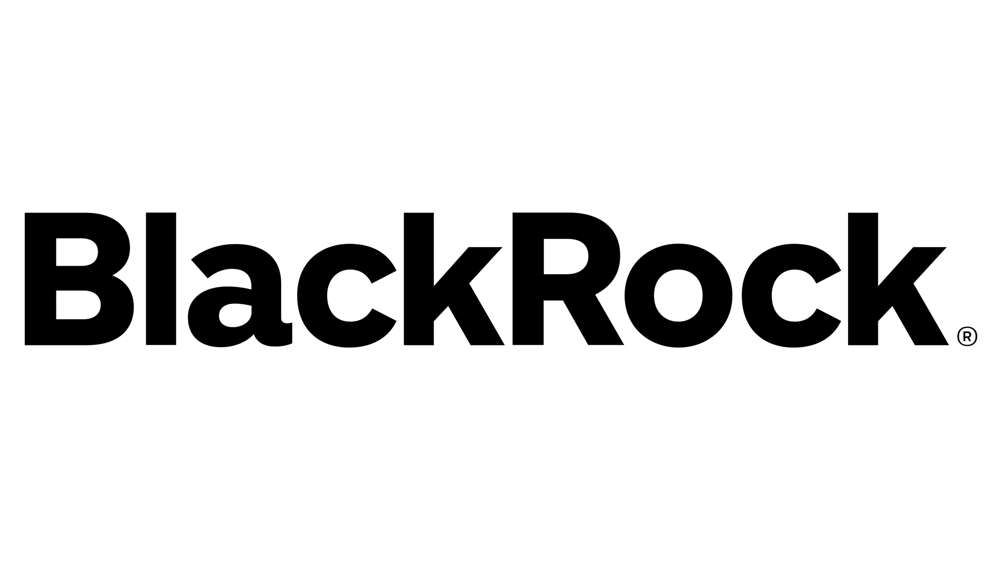
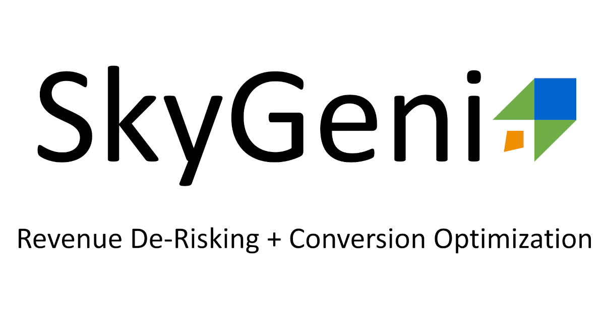

Stanford University, USA
Artificial Intelligence Program
2026-27 · 95.8%
Data Science and AI
I build data and machine learning systems that forecast revenue, score risk and segment customers, and AI agents that automate analysis. Seven-plus years across analytics, data science and AI, working in Python, SQL and cloud platforms.
Location: San Jose, California
About
I'm a data professional with 7+ years of experience in AI, data science and analytics across technology, finance, banking and education. I lead data projects on cloud architectures and build forecasting models, risk scores and AI agents that cut manual reporting.
Adobe AI Ambassador. I promote AI adoption through enablement, knowledge sharing and AI-driven innovation across teams.
Artificial Intelligence Program
2026-27 · 95.8%
MS in Data Science and Analytics
2019-21 · GPA 3.93/4
MBA in Business Analytics and Finance
2015-17 · Gold medalist

BS in Statistics and Finance
2012-15
Experience
Adobe, San Jose, CA
Forecasting models and AI agents for marketing and finance teams, including agents that automate funnel insights, M&A signals and competitor tracking.

BlackRock, San Francisco, CA
Led 20+ analytics and data science implementations for global clients, and built data cloud pipelines and generative AI tools for investment teams.
SAP, Houston, TX
Predictive models and ETL pipelines for customer success, and named SAP Best Intern 2021.

SkyGeni, San Jose, CA
Predictive models and ETL pipelines on go-to-market data for Fortune 500 clients.
Northeastern University, San Jose, CA
Automated workflows in SQL, and was a Graduate Teaching Assistant for Predictive Analytics, mentoring 30+ graduate students.
ICICI Bank, India
SQL automation, a BigQuery data warehouse and Tableau dashboards, and named Top Analyst for A/B testing work on credit strategies.
GIC Housing, India
Built PRiSE, a machine learning model for predicting loan defaults that reduced defaults by 28%.
Projects
Selected projects from my GitHub, grouped by where I built them. Each card links to the code.
Artificial Intelligence Program, 2026-27
Independent implementations of ideas from the program, including search, constraint satisfaction and probabilistic inference.
AI algorithms
Generates conflict-free meeting schedules as a constraint satisfaction problem. It uses backtracking search with MRV and LCV ordering, forward checking and constraint propagation, and in the demo it schedules 4 of 4 meetings in 5 search nodes with no backtracking.
View the repositoryAI algorithms
Compares Uniform Cost Search and A* for optimal route planning on weighted graphs, using admissible heuristics, path reconstruction and search-efficiency benchmarking to show the trade-offs.
View the repositoryAI algorithms
A Bayesian network that estimates operational risk from observed evidence such as load, anomaly signals and service symptoms, computing posterior probabilities by enumeration.
View the repositoryMS in Data Science and Analytics, 2019-21
Marketing analytics
Tracks engagement (DAU, MAU, ARPU) and revenue per user, calculates customer lifetime value from cohorts and retention curves, and builds churn and sales models. Uplift modeling and A/B tests measure what each campaign actually changed.
Open the notebookForecasting
Forecasts annual recurring revenue to find growth patterns, seasonality and churn trends by segment. Also covers pricing elasticity, promotion impact, multi-touch attribution and CPA versus LTV.
Open the notebookForecasting
Forecasts sales prices across stores and departments using time series features, and surfaces seasonal patterns, holiday effects and store-level demand differences.
Open the notebookMarketing analytics
Builds customer-level features from transactions, clusters customers with K-means, profiles each segment, and recommends best-sellers to customers in the same cluster who haven't bought them yet.
Open the notebookExploratory analysis
Explores popular listings and the busiest hosts with Pandas, Seaborn and a geographic heatmap, and uses SQL (self joins, CTEs, procedures) to prepare data for a Tableau dashboard.
Open the notebookMachine learning
Predicts house transaction prices with regression models compared on RMSE, R-squared and mean absolute error, using one-hot encoding for categorical features.
Open the notebookSQL
Cleans and explores 2020-2021 country-level case, death and vaccination records using joins, CTEs, temp tables, window functions and views.
Open the SQL fileSQL
Loads, cleans and restructures records of houses sold in Nashville between 2013 and 2019, using DML, DQL and DDL.
Open the SQL fileMachine learning
Detects outliers and explores a dataset of more than 10,000 cars (fuel type, horsepower, transmission, mileage) before predicting price.
Open the notebookMachine learning
Predicts the likelihood of winning a battle and compares models. XGBoost on a reduced feature set had the lowest error, using only attack and speed.
Open the notebookExploratory analysis
Analyzes the city's daily export of moving truck permits, with modeling and visualization of the data.
Open the notebookExploratory analysis
Compares the largest US companies by region, industry and sector, and models the relationship between profit and headcount to find the KPIs behind efficiency.
Open the notebookMBA in Business Analytics and Finance, 2015-17
Finance and risk
A scoring engine that flags likely home loan defaulters from demographic, geographic, credit appraisal and loan-specific factors. It reduced loan defaults by 28% and the research won the Best Research Paper Award at GCBFR USA.
Read the paperAll repositories are on GitHub.
Skills
Achievements
 HackBLK
HackBLK ServiceNow
ServiceNow Accenture
Accenture Jeeva Health AI
Jeeva Health AI Alicorn Venture
Alicorn Venture Google DSC
Google DSCHackBLK, runner-up. Designed a commission-based auto-investing app using Keras to promote financial democratization.
ServiceNow Accenture Hackathon, winner. Built an anomaly and threat detection model that reduced security vulnerability by 20%.
Jeeva Health AI. Built a SciPy model and SQL to assess health datasets, improving preventative care strategies by 30%.
Alicorn Venture. Developed Bitcoin price prediction SQL models that informed tech investment decisions.
Google DSC. Prototyped an MVP and BI strategy for the AyyGo app, and built a go-to-market plan that reached $50K in revenue.
Speaker and panelist on AI and technology topics.
 AI Sustainability Summit
AI Sustainability Summit Society of Women Engineers
Society of Women Engineers Meta
Meta Microsoft
Microsoft Google
Google Costco
CostcoAI Sustainability Summit.
Society of Women Engineers Conference.
Meta and BlackRock Forum.
Panel discussion with Microsoft, BlackRock and Northeastern University.
Panel discussion with Google, Costco and Northeastern University.
Impact of Statistical and Risk Variables on Non-Performing Loans. The research behind PRiSE, which reduced loan defaults by 28%.
Read the paperBeyond work
I enjoy attending, and sometimes winning, hackathons and coding competitions. They're a good excuse to try new technology, meet people and drink a lot of free coffee.